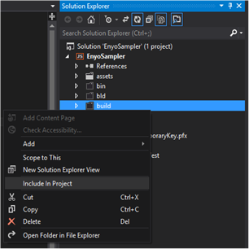
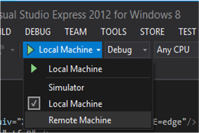

Enyo Apps on Windows 8
In this article, we present instructions for developers wishing to deploy Enyo applications to PCs and tablets running Windows 8, via the Windows Store.
Before You Begin
In order to build and test your Enyo application for Windows 8, you will first need the following:
- Enyo 2.2 or later
- A PC running Windows 8 (and, optionally, a tablet running Windows 8)
- Visual Studio 2012 (Professional, Premium, or Ultimate edition) or Visual Studio Express 2012 for Windows 8
Building and Testing
1. Create Your Enyo Application
Build your Enyo application using the Bootplate template, as described here.
2. Create a New Visual Studio Project
Open Visual Studio and select File > New Project.
Your project structure will be built with your main page named
default.html. Change the name of this file toindex.htmlto match your Enyo application. In the Solution Explorer on the right-hand side of the screen, double-click thepackage.appxmanifestfile to open it. You will see a field labeled Start Page. Update this field value to match yourindex.htmlstarting page.Your project will include
cssandjsfolders by default. Feel free to delete these from the project.Copy your Enyo bootplate app into your Visual Studio project structure. Make sure that your application files are included in the project by right-clicking on your files and folders and selecting the Include in Project contextual menu item.

Replace your project’s
index.htmlfile with theindex.htmlfrom your Bootplate app, or else edit it to look like the following:<!DOCTYPE html> <html> <head> <meta http-equiv="X-UA-Compatible" content="IE=edge"/> <meta charset="utf-8" /> <title>Enyo 2 Sampler</title> <!-- css --> <link href="build/enyo.css" rel="stylesheet"/> <link href="build/app.css" rel="stylesheet"/> <!-- js --> <script src="build/enyo.js"></script> <script src="build/app.js"></script> </head> <body class="enyo-unselectable"> <script> new App().renderInto(document.body); </script> </body> </html>
3. Build and Deploy Your Project Locally
In Visual Studio, select Debug > Start Debugging to build and debug your project on your local PC.
4. Build and Deploy Your Project on a Remote Device (Surface)
First, install Remote Tools for Visual Studio 2012 on your Microsoft Surface.
On the Surface, open Internet Explorer and navigate to http://www.microsoft.com/visualstudio/eng/downloads#d-additional-software.
Select the item Remote Tools for Visual Studio 2012.
Download and install the Remote Tools for Visual Studio 2012 (ARM) – English.
Then, launch and configure the debugger that you just installed.
On your Surface, open the Remote Debugger application. (Note that it will open in the PC environment.)
Select Tools > Options.
Select No Authentication and ensure that Allow any user to debug is checked. (You may need to set authentication based on your network situation.)
Make sure that your computer and your Surface are on the same network. In Visual Studio, select Remote Machine as your debug/build target.

Once Remote Machine is selected, you should be able to locate your Surface on the network.
Enyo Sampler on Windows 8
It’s also possible to install the Enyo Sampler app on your Windows 8 PC or tablet. To do so, you’ll need to download the built app (in an archive called ProjectOutputFolder.zip), either from the Enyo Bug Tracker or from the Dropbox file sharing service.
To obtain the file from Dropbox, connect to Dropbox (via browser or client app) using the following credentials:
username: enyojs@hotmail.com
password: olympusThe zip file is in the Win8Sampler folder.
Once you have the file, unzip it and open the resulting folder (ProjectOutputFolder) in Explorer. Then do the following:
Navigate to the folder called
ProjectOutputFolder\AppPackages\EnyoSampler_0.0.1.0_AnyCPU_Debug_Test.Right-click the
Add-AppDevPackage.ps1file and select Run with PowerShell.If the PowerShell window flashes and disappears:
- Press Start and type
PowerShell. - Right-click the PowerShell shortcut and select Run as Administrator.
- In the new PowerShell window, type
Set-ExecutionPolicy -ExecutionPolicy Unrestricted. - Answer Y at the security prompt.
- Go back to the Explorer window and try running the
Add-AppDevPackage.ps1script again.
(For more information on installing app packages in Windows 8, see http://msdn.microsoft.com/en-us/library/windows/apps/hh975356.aspx.)
- Press Start and type
If you are prompted to acquire a Developer License, answer Y and use these credentials:
user: enyojs@hotmail.com pass: olympusIf you are prompted to install a local certificate, answer Y.
The installation script should proceed until it says
"Successfully installed".Press Start, swipe all the way to the right and find the Enyo Sampler app; tap or click it to launch.